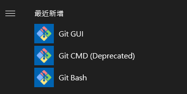

Git Installation on Windows
要在 Windows 作業系統上安裝 Git，請到官方網站下載合適的版本：
網址：https://git-scm.com/download/win
網站會偵測使用者的系統版本為32-bit或64-bit，進行自動下載。
安裝過程中，每個步驟都點選下一步直到安裝完成：
安裝完成後，請搜尋「Git Bash」應用程式：
進入 Git Bash 後，請試試輸入以下兩個指令，來驗證 Git 是否安裝成功，以及查看版本資訊：
若看到類似的訊息，就表示安裝成功。
使用者設定
要開始使用 Git，請先對使用者設定識別資料，分別是使用者名稱及電子郵件，每次 Git 提交會使用此資訊，請打開終端機，輸入下面這兩行指令，請自行替換使用者及電子信箱名稱：
1 | $ git config --global user.name "Cheng-Yi-Ting" |
輸入完成之後，可以再檢視一下目前的設定：
1 | $ git config --list |
你也可以輸入 git config <key> 來檢視某個設定目前的值：
1 | git config user.name |
專案設定不同的作者
若有傳遞 –global 參數，意思是要做全域（Global）的設定，不論 Git 做任何事都會採用此資訊，如果遇到要幫特定的專案設定不同的作者及電子郵件，可以在該專案目錄下進行 Git 設定的時候，加上 –local 參數：
1 | $ git config --local user.name ray |